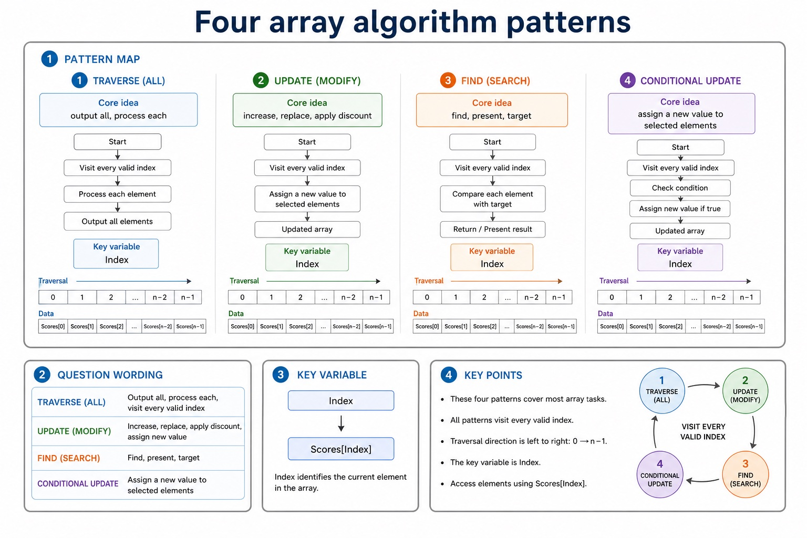
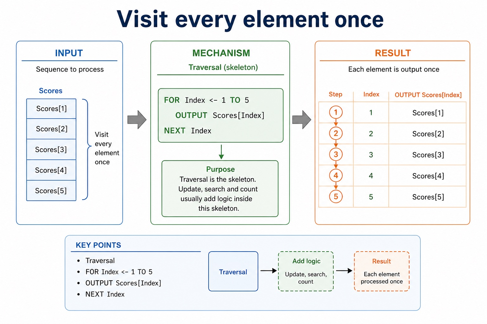
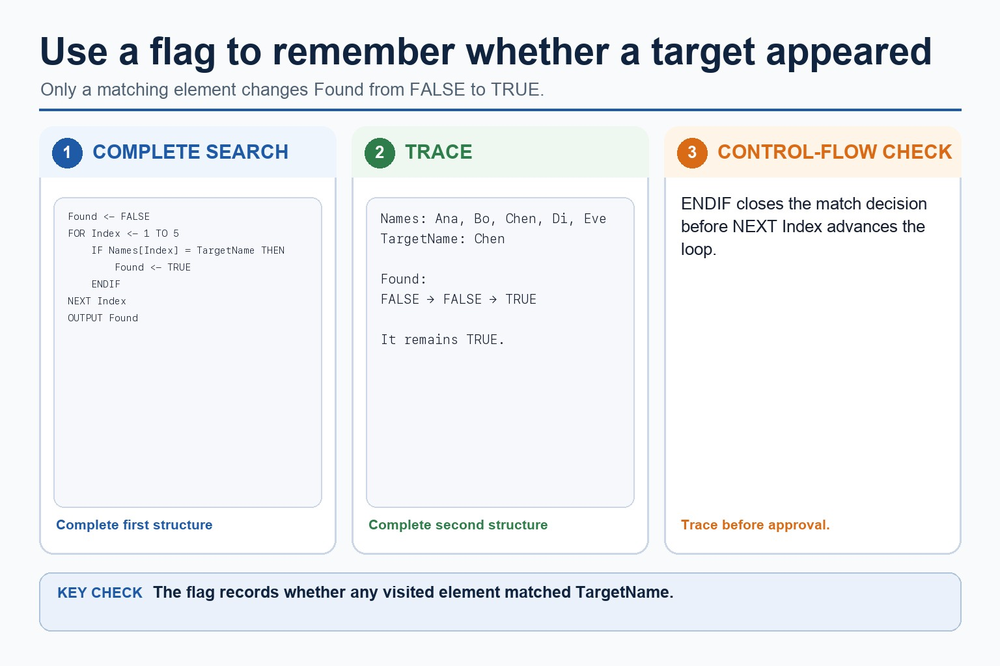
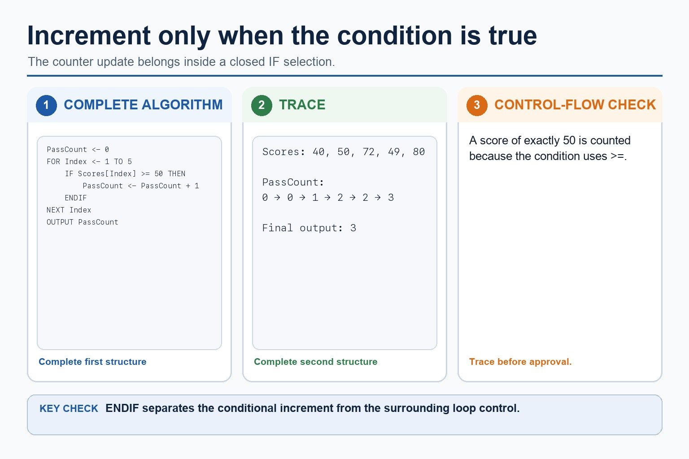
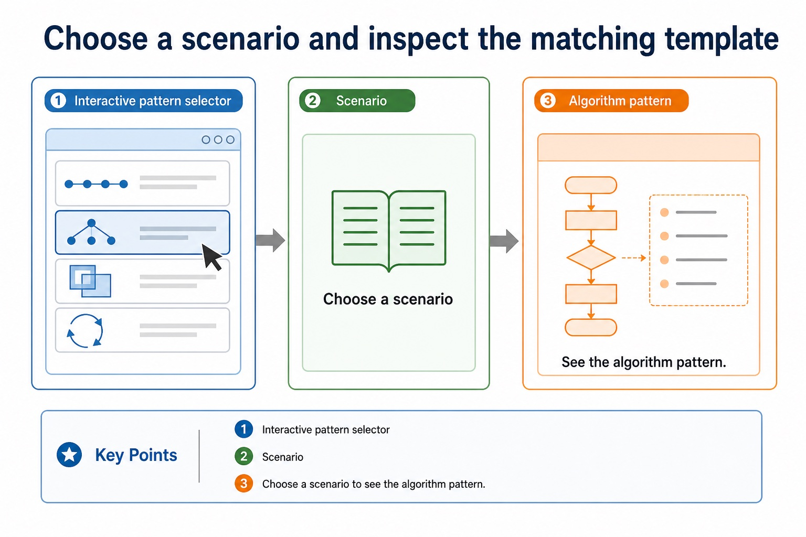

Before tracing a search, define the data structure it traverses. An array is a fixed-size indexed collection whose elements have one declared data type. The index selects one element; it is not the value stored in that element.
Cambridge pseudocode declares explicit inclusive bounds. In DECLARE Names : ARRAY[1:4] OF STRING, 1 is the lower bound, 4 is the upper bound and the valid indexes are 1, 2, 3 and 4. A search must start and stop within those declared bounds.
Linear search checks successive indexed elements until the target is found or every populated element has been checked. Binary search also uses indexes, but requires the array to be sorted so each comparison can discard one half of the remaining index range.
Candidates must be able to write a bubble sort and a linear search algorithm, not only describe or trace an existing algorithm.
Worked example: Declare the search data before tracing it
DECLARE Names : ARRAY[1:4] OF STRING defines four string elements. For Names = ['Asha', 'Ben', 'Chen', 'Dina'], a one-based linear search compares Names[1], then Names[2], and stops when it finds 'Ben'. Index 0 is invalid because it is below the declared lower bound.
Linear search checks each item in order
Linear search checks each item in order: source-grounded visual explanation.
Lesson fact: Knowledge explanation
Lesson fact: How it works
Lesson fact: Start at the first item. Compare it with the target. If it matches, stop. If not, move to the next item until found or the list ends.
Lesson fact: When it is suitable
Lesson fact: Use it when data is unsorted, the list is small, or simplicity matters more than speed.
Lesson fact: Worst case: the target is last or absent, so every item may be checked.
Arrays become useful when loops do the repetitive work.
Declaring an array is only the start. Most Paper 2 array questions ask you to visit elements, update
selected elements, search for a target, or count elements that match a condition. The secret is simple:
one loop visits one valid index at a time, and the statement inside the loop does the job.
Recognisetraversal, update, search and count array algorithm patterns
WriteCambridge-style pseudocode using correct indexes and loop bounds
Tracerunning totals, counters, flags and updated elements accurately
Index12345Score4267558149
IF Scores[Index] >= 50 THEN Count <- Count + 1
The index moves. The pattern stays calm.
Why this matters
Mark schemes reward matching bounds, indexed access, correct initialisation and placing updates inside the loop.
Common error
Do not update the counter, total or flag outside the loop if it depends on each element.
Warm-up hook
What is the algorithm really doing?
A program checks every score and counts how many are at least 50. Which pattern is this?
Choose the pattern that increments a counter only when a condition is true.
Pattern map
Four array algorithm patterns
Chinese support: 先判断题目是“遍历、修改、查找、计数”哪一种，再写循环。
Pattern
Question wording
Core idea
Key variable
Traversal
output all, process each
visit every valid index
Index
Update
increase, replace, apply discount
assign a new value to selected elements
Scores[Index]
Search
find, present, target
compare each element with target
Found
Count
how many, number of, at least
increment a counter when condition is true
Count
Four array algorithm patterns

Four array algorithm patterns: source-grounded visual explanation.
Lesson fact: Pattern map
Lesson fact: Question wording
Lesson fact: Core idea
Lesson fact: Key variable
Lesson fact: Traversal
Lesson fact: output all, process each
Lesson fact: visit every valid index
Lesson fact: increase, replace, apply discount
Lesson fact: assign a new value to selected elements
Lesson fact: Scores[Index]
Lesson fact: find, present, target
Lesson fact: compare each element with target
Traversal
Visit every element once
FOR Index <- 1 TO 5
OUTPUT Scores[Index]
NEXT Index
Traversal is the skeleton. Update, search and count usually add logic inside this skeleton.
Visit every element once

Visit every element once: source-grounded visual explanation.
Lesson fact: Traversal
Lesson fact: FOR Index <- 1 TO 5
Lesson fact: OUTPUT Scores[Index]
Lesson fact: NEXT Index
Lesson fact: Traversal is the skeleton. Update, search and count usually add logic inside this skeleton.
Update
Change selected elements
Update every element
FOR Index <- 1 TO 5
Scores[Index] <- Scores[Index] + 2
NEXT Index
Update only when condition is true
FOR Index <- 1 TO 5
IF Scores[Index] < 50 THEN
Scores[Index] <- Scores[Index] + 5
ENDIF
NEXT Index
Lesson fact: Traverse the array with a FOR loop so Index is defined for every access.
Lesson fact: Place the conditional update inside the traversal.
Lesson fact: FOR Index <- 1 TO 10
IF Scores[Index] < 50 THEN
Scores[Index] <- Scores[Index] + 5
ENDIF
NEXT Index
Search
Use a flag to remember whether the target appeared
Found <- FALSE
FOR Index <- 1 TO 5
IF Names[Index] = TargetName THEN
Found <- TRUE
ENDIF
NEXT Index
OUTPUT Found
Use a flag to remember whether the target appeared

Use a flag to remember whether the target appeared: source-grounded visual explanation.
Lesson fact: Initialise Found to FALSE before traversing the names.
Lesson fact: Set Found to TRUE only when the current name equals TargetName.
Lesson fact: Close the match selection with ENDIF before NEXT Index.
Lesson fact: Output Found after the traversal.
Count
Increment only when a condition is true
PassCount <- 0
FOR Index <- 1 TO 5
IF Scores[Index] >= 50 THEN
PassCount <- PassCount + 1
ENDIF
NEXT Index
OUTPUT PassCount
Increment only when a condition is true

Increment only when a condition is true: source-grounded visual explanation.
Lesson fact: Initialise PassCount to zero before traversing five scores.
Lesson fact: Increment PassCount only when the current score is at least 50.
Lesson fact: Close the selection with ENDIF before NEXT Index.
Lesson fact: Output PassCount after the loop.
Trace
Trace the index, condition and running variable
Index
Scores[Index]
Condition >= 50
PassCount
start
-
-
0
1
42
FALSE
0
2
67
TRUE
1
3
55
TRUE
2
4
81
TRUE
3
5
49
FALSE
3
Pseudocode vs Java
Same algorithm, different array syntax
Cambridge-style pseudocode
PassCount <- 0
FOR Index <- 1 TO 5
IF Scores[Index] >= 50 THEN
PassCount <- PassCount + 1
ENDIF
NEXT Index
Java support only
int passCount = 0;
for (int index = 0; index < 5; index++) {
if (scores[index] >= 50) {
passCount++;
}
}
Paper 2 reminder: follow the bounds in the pseudocode question. Java examples support understanding, not exam syntax.
Same algorithm, different array syntax
Same algorithm, different array syntax: source-grounded visual explanation.
Lesson fact: Both pseudocode and Java versions visit five score positions.
Lesson fact: Increment the pass counter only when the current score is at least 50.
Lesson fact: Close the conditional before advancing the loop.
Lesson fact: Both complete versions output the final pass count after the loop.
Interactive pattern selector
Choose a scenario and inspect the matching template
Choose a scenario to see the algorithm pattern.
Choose a scenario and inspect the matching template

Choose a scenario and inspect the matching template: source-grounded visual explanation.
Lesson fact: Interactive pattern selector
Lesson fact: Scenario
Lesson fact: Choose a scenario to see the algorithm pattern.
Interactive trace runner
Run a count algorithm on the sample scores
Scores are 42, 67, 55, 81, 49.
Worked examples
Reusable array algorithms
Practice with instant checking
Ten quick algorithm checks
Answer briefly, then use Show answer to compare with strict wording.
Mistake debugging
Fix common array algorithm errors
Exam-style questions
Original Cambridge-style array algorithm questions with expandable MS
These questions focus on indexed access, traversal, update, search, count and trace precision.
Summary
Array algorithm checklist
Initialiseset totals, counters and flags before the loop.
Indexuse Array[Index] with loop bounds matching the declaration.
Updateplace condition checks and updates inside the loop when they depend on each element.
Homework
Clear consolidation tasks
Task 1: SearchWrite pseudocode to search Codes[1:20] for TargetCode and output whether it is found.Task 2: CountWrite pseudocode to count how many Temperatures[1:7] are greater than 30.Task 3: Update and traceFor Scores[1:5] = 42, 67, 55, 81, 49, trace the result after adding 5 to every score below 50.